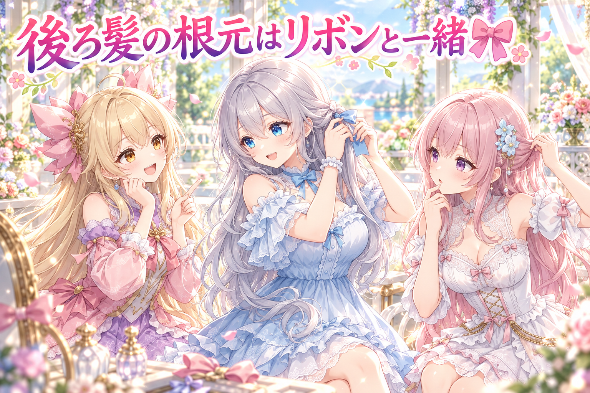
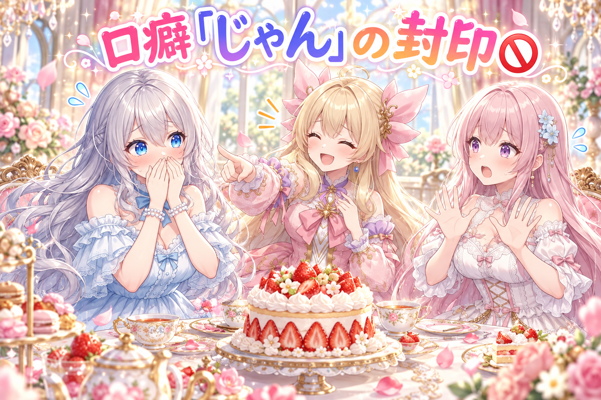
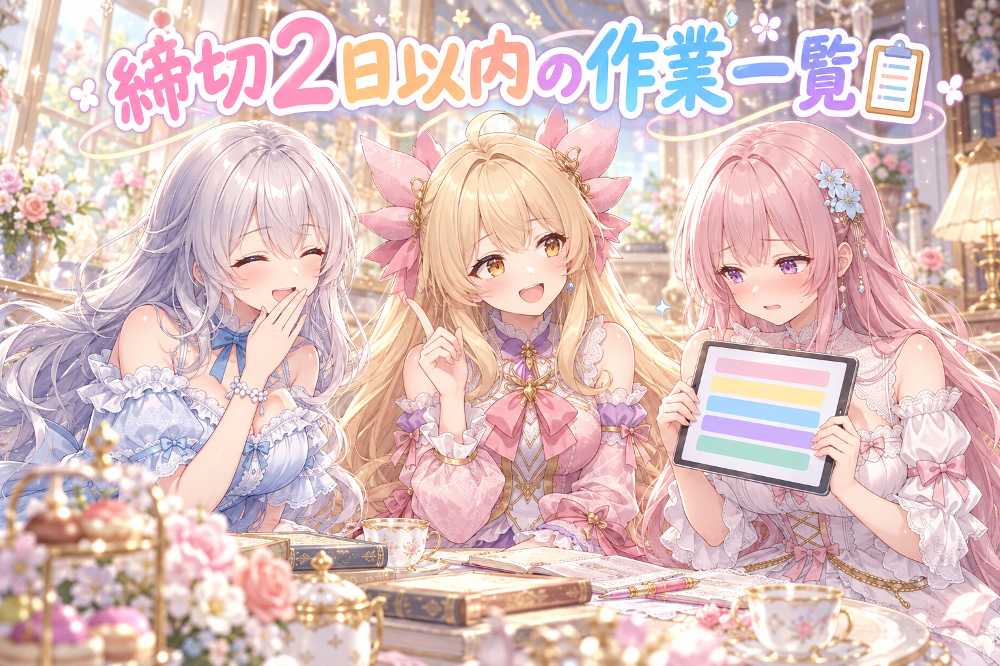
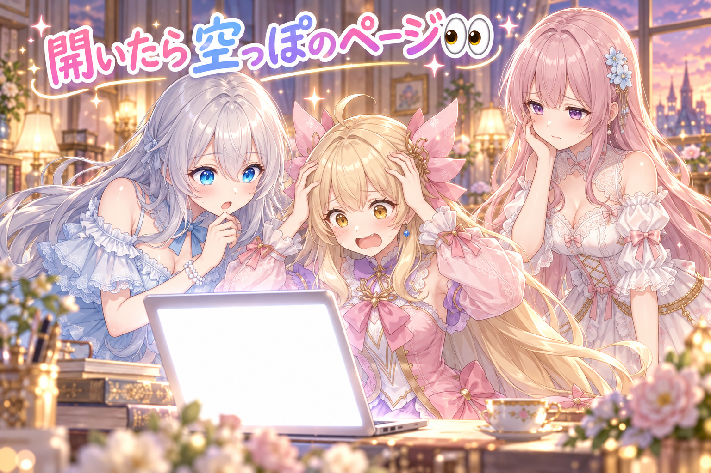
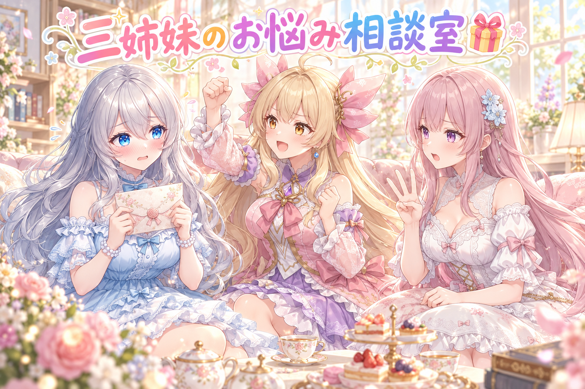

📌 3行まとめ
- アイリスの動く立ち絵で、後ろ髪の根元が頭のリボンと別々に動いて切れて見える問題に、根元だけリボンと同じ動きをさせる直しを入れて、新しい目の検品にかけた
- ルピナスの口調のお手本から「じゃん」を抜き、セリフの検査でもルピナスの「じゃん」を止めるようにした（配布ページの会話劇も手直し）
- 作業の管理画面に「締切2日以内・自分の操作待ち」だけを並べる一覧を作り、ページの出し忘れで空っぽになる事故を止める仕組みも足した

ルピナス （笑顔）
こんばんは、ルピナスです。今日もAIBSのゆるい番組、始めていきますね。

アイリス （大笑い）
前回は「また栗？」問題をやっつけたよね！あたし、あれ以来ごはんのたびに「また？」って聞くクセがついちゃった。

フィオナ （ふつう）
それはネタかぶりではなく、ただのお好みの問題ですね、アイリスちゃん。今日は立ち絵の髪と、お姉ちゃんの口癖のお話がありますよ。

ルピナス （照れ）
私の口癖の話、全世界に流れるの……ちょっと恥ずかしいけど、いきましょう。
1. 🎀 アイリスの後ろ髪、根元はリボンと一緒に動かす

アイリスの全身の動く立ち絵は、腰より長い金髪が見どころです。ところが首をかしげると、後ろ髪の束の上の端（頭とリボンに隠れているはずの所）が頭と別の動きをして、隙間から髪の切れ目がのぞいてしまっていました。作者からは「AIで描いた絵でも、切れたまま見える所があったらダメ」とはっきり言われています。そこで後ろ髪の束それぞれの上の端だけを、頭のリボンとまったく同じ動きに揃え、下に行くほど元の揺れにじわっと戻す形にしました。直した版は、前の結果を知らない新しい検品役に、合格版と並べて厳しく見てもらっています。

アイリス （笑顔）
はい、実況いきまーす！ただいまアイリス、首を右にかしげております！

フィオナ （考え中）
かしげると、頭とリボンは大きく回ります。でも後ろ髪は奥にあるので、少し遅れて、少しだけしか動かないんです。

アイリス （びっくり）
あ、それで根元がずれて、リボンの下から髪の断面がこんにちはしてたの！？

ルピナス （ふつう）
そう。奥行きを出すための遅れが、隠れてるはずの端っこを見せちゃってたのね。

アイリス （ドヤ顔）
じゃあ簡単！後ろ髪ぜーんぶ、頭と一緒に動かせばいいんだよ！

フィオナ （呆れ）
それだと髪が板みたいになって、ふわっと揺れる長い金髪の魅力が消えてしまいます。
ルピナス （笑顔）
だから上の端だけリボンにぴったりくっつけて、下へ行くほど元の揺れに戻すの。帽子のゴムで留めた髪みたいな感じね。
アイリス （大笑い）
根元はリボンの子分、毛先は自由人！
フィオナ （ふつう）
ついでに、袖の小さなリボンの揺れも測りました。体を揺らすと、揺れの出力が端っこに張り付いたままのこまが8割前後もあったんです。

アイリス （衝撃）
8割！？それ揺れてるんじゃなくて、ずっと全力でバンザイしてるだけじゃん！
フィオナ （考え中）
しかも体を傾けて止めても、元に戻らずに傾いたまま残っていました。

ルピナス （呆れ）
見た目では「揺れてる気がする」でも、数字にすると張り付いてたのね。目で見る検品と数字の検品、両方大事だよね。

アイリス （しょんぼり）
あたしの袖リボン、ずっと手を上げっぱなしで疲れてたんだね……今度ちゃんと休ませてあげよ。
ルピナス （ふつう）
リボンより先に、夜通しで作業してた作者さんこそ休んでほしいけどね。今日も途中で再起動して、深夜まで続けてたもの。お水飲んで、ちゃんと寝てね。
📝 ポイント（初心者向け解説・技術メモ・まとめ）
- 初心者向け解説：奥にある髪は少し遅れて動くと立体っぽく見えますが、そのせいで隠れていた端っこがはみ出すことがあります。髪の根元をリボンの「ゴム」で留めるイメージで、根元だけ頭に付いていかせ、毛先は自由に揺らすと切れ目が見えなくなります🎀
- 技術メモ：Live2D Cubism で、後ろ髪の束の変位を位置に応じて混ぜる。上端（リボンに隠れる範囲）は頭のリボンと同じ変位・同じ回転中心、そこから下の一定区間でなめらかに元の視差（顔の変位に負の係数）へ補間。物理は出力の張り付き率（全フレーム中で出力が上限・下限に達しているこまの割合）と、入力を止めた後の残留値を測ると、倍率過大や収束不足が数字で見える。
- ひとことまとめ：根元は頭と一緒、毛先は自由に。
2. 🚫 お姉ちゃんの口から「じゃん」が消えた日

AIで三姉妹のセリフを書くとき、それぞれの口調のお手本を渡しています。ところがルピナスのお手本に「〜じゃん」が混ざっていて、優しいお姉さんのはずが、元気な次女アイリスみたいな言い回しになることがありました。作者の指示で、ルピナスの口調のお手本から「じゃん」を抜き、書いたセリフを自動で確かめる検査でも、ルピナスの「じゃん」を止めるようにしました。すでに出ていた配布ページの会話劇も、ルピナスのセリフを手で直しています。
ルピナス （ふつう）
というわけで、今日から私は「じゃん」禁止です。気をつけて話しましょう。

アイリス （にやり）
ふっふっふ。お姉ちゃん、本当に言わないでいられるかなー？試してみよっと。ねえねえ、今日のケーキ、おいしそうじゃない？
ルピナス （笑顔）
ほんと、おいしそうね。いちごがつやつやしてる。

アイリス （考え中）
くっ、手強い……。じゃあこれ！フィオナがケーキ全部食べちゃったら？

フィオナ （びっくり）
えっ、わたしがですか！？食べていません！

ルピナス （怒り）
ちょっとフィオナ、それはずるいじゃ……
アイリス （大笑い）
はいストーップ！今の、検査に止められるやつ！赤ランプ点灯でーす！

ルピナス （あわあわ）
ま、まだ「じゃ」までだから！セーフ！私は「じゃがいも」って言おうとしただけなの！
アイリス （ドヤ顔）
ケーキの話でじゃがいもは無理があるよお姉ちゃん！いつもあたしにツッコむ側なのに、今日は立場逆転だね！
フィオナ （ふつう）
ちなみに、アイリスちゃんの「じゃん」はそのまま使えます。検査が止めるのはお姉ちゃんのセリフだけなんです。
アイリス （笑顔）
つまり「じゃん」は今日からあたしの専売特許！じゃんじゃん使うじゃん！
ルピナス （呆れ）
使いすぎて、今度はアイリスの方に回数制限がかかりそうね。
📝 ポイント（初心者向け解説・技術メモ・まとめ）
- 初心者向け解説：AIにキャラのセリフを書いてもらうときは、お手本の言葉づかいをそのまま真似されます。お手本に一言でも別キャラっぽい口癖が混ざると、キャラがぶれちゃうので、お手本の掃除と、できあがりの見張り役の両方を用意すると安心です💬
- 技術メモ：口調の正本（ペルソナのお手本文）から該当語尾を削除し、生成後のセリフ検査で「話者がルピナス かつ 語尾に『じゃん』」を不合格にする。ほかのキャラは許可したまま、話者ごとに禁止語を持たせるのがコツ。止まるべきケースと止まってはいけないケースの両方を試験に入れておく。
- ひとことまとめ：口癖は、お手本と検査の両方で守る。
3. 📋 今日やることが、ひと目で分かる一覧に

絵の確認・投稿の承認・イベントへの参加など、作者が自分で見て判断しないと進まない作業は毎日たくさんあります。これまでは確認用の画面に全部が並んでいて、どれが急ぎか探すのが大変でした。そこで「締切が2日以内で、作者の操作待ちのもの」だけを自動で集める一覧を作りました。締切日ごとに仕切りを入れ、期限切れのものは出さず、期限の書いていないものは一番下、古いものは数だけ表示します。さらに一覧の行をタップすると、その作業の確認画面にそのまま飛べるようにして、試験用の画面で実際にタップして切り替わることも確かめました。

フィオナ （笑顔）
では、ここでクイズです。新しい一覧に「出てこない」ものはどれでしょう？ 一、明日締切の絵の確認。二、もう締切が過ぎたイベント。三、今日締切の投稿の承認。
アイリス （考え中）
うーん……答えは四！フィオナがこっそり食べたケーキ！

フィオナ （怒り）
選択肢にありませんし、まだ食べていません！

フィオナ （照れ）
……正解は二番です。過ぎたものを並べても、もうできないので気持ちが焦るだけなんです。
アイリス （びっくり）
あ、やさしい設計だ！夏休みの最終日に、終わった宿題の山を見せられないシステム！
ルピナス （ふつう）
それと、タップしたらその場所に飛べるのが大きいの。今までは一覧で見つけて、別の画面で探し直してたから。
アイリス （笑顔）
冷蔵庫の中身リストを押したら、冷蔵庫がその棚を開けてくれる感じ！
フィオナ （ふつう）
本当にタップして、ちゃんとその作業の画面に切り替わるのを確かめてあります。動くはず、ではなく動きました。
アイリス （にやり）
じゃあ次は、あたしのおやつの締切も入れて！
ルピナス （呆れ）
おやつは締切じゃなくて、食べすぎの方を見張ってほしいよね。
📝 ポイント（初心者向け解説・技術メモ・まとめ）
- 初心者向け解説：やることリストは、全部並べるより「今の自分が手を動かせるものだけ」に絞ると、ぐっと動きやすくなります。もう過ぎたものや遠い先のものは脇によけて、急ぎから順番に見えるようにするのがコツです🗂️
- 技術メモ：各作業の状態から「操作待ち かつ 締切まで2日以内」を抽出し、締切日でグループ化。期限切れは除外、締切未記載は末尾、古い束は件数のみに要約。行のタップでダイアログを経由して該当スロットのレビュー画面へ遷移。試験用アプリで実タップによる画面切り替えを確認し、自動試験も追加。
- ひとことまとめ：一覧は、絞って・並べて・すぐ飛べる。
4. 👀 今日のやらかし

三姉妹は、AIイラストのプロンプト（絵の注文文）をページにして配っています。ところがこの日、新しい配布ページを開くと「ページが見つかりません」になっていました。原因は、ページのファイルを作ったのに、公開側に送る手順が抜けていたこと。作った本人の手元では見えるので気づけなかったのです。そこで、ページを置くとき・公開するとき・全体の点検のとき、の3か所で「まだ送っていないファイルがないか」と「実際にページを開いて正常に返ってくるか」を確かめる仕組みを足しました。あわせて、配布ページの作例の絵も、三姉妹の基準になる絵を一緒に渡して描き直し、顔や雰囲気がぶれないように揃えています。

アイリス （あわあわ）
大変大変！新しい配布ページ開いたら、真っ白で「見つかりません」って！

フィオナ （しょんぼり）
作りました。手元には、きれいにあるんです。ただ、お店のショーケースに並べるのを忘れていました。

アイリス （呆れ）
ケーキを焼いて、厨房に置いたまま「いらっしゃいませー！」って言ってたってこと！？

ルピナス （大笑い）
お客さんはショーケースの前で、空っぽのお皿を見てたのね。
フィオナ （ふつう）
なので今は、置くとき・出すとき・点検のときの3回、厨房に置きっぱなしがないか確かめます。それに、お客さん側からページを実際に開いてみて、ちゃんと出るかも見るんです。
アイリス （笑顔）
わざと置き忘れた失敗も5種類作って、ちゃんと全部止まるのを確かめたんだって！
ルピナス （ふつう）
「止まるべき時に止まる」まで試すのが大事なんだよね。成功の試験だけだと、見張り役が寝てても気づけないから。
アイリス （ドヤ顔）
これでもう完璧！ショーケースの前に見張り3人体制！
フィオナ （考え中）
……ただ、作例の絵を見直したら、わたしとアイリスちゃんの顔が少し別人だったので、そちらも描き直しました。
アイリス （衝撃）
ショーケース直したら、今度は中のケーキが別人だったの！？
ルピナス （笑顔）
だから基準の絵を一緒に渡して焼き直したの。今はちゃんと、いつものふたりの顔よ。
📝 ポイント（初心者向け解説・技術メモ・まとめ）
- 初心者向け解説：自分のパソコンで見えているページが、みんなにも見えているとは限りません。手紙を書いてもポストに入れなければ届かないのと同じで、最後に「相手側から本当に見えるか」を確かめると安心です📮
- 技術メモ：公開前後の各入口で、git の未追跡・未 push のファイルを検出し、さらに公開URLへ HEAD リクエストを送ってステータス200を確認する門を追加。わざと失敗させる逆試験を5種類用意して全部止まることを確認。作例は基準画像（マスター）を参照添付して再生成し、キャラの同一性を保つ。
- ひとことまとめ：作ったら、届いたかまで見る。
5. 🎁 お楽しみコーナー：三姉妹の相談室

常連リスナーさんから届きそうなお悩みに、三姉妹がアドバイスするコーナーです。今日のお悩みはこちら。「つい同じ口癖ばかり言ってしまいます。友達に真似されて恥ずかしいです」
ルピナス （照れ）
……これ、今日の私に向けたお悩みじゃない？
アイリス （笑顔）
あたしのアドバイスは簡単！口癖は個性！むしろ毎回言って、友達が真似したくなるくらい定着させちゃおう！
フィオナ （考え中）
わたしは、言い換えの候補を3つ用意しておくのをおすすめします。同じ気持ちでも、言葉を選べると表現が豊かになりますから。
アイリス （呆れ）
フィオナ、真面目すぎ！友達との会話で、毎回3択から選んでたら日が暮れちゃうよ！
フィオナ （怒り）
アイリスちゃんこそ、真似されて恥ずかしいって相談なのに、もっと言わせようとしています！
ルピナス （ふつう）
ふたりとも一理あるよね。でも私の答えは、真似されるのは仲良しの証拠、だと思うの。気になるなら、真似されたら一緒に笑っちゃえばいいんだよね。
アイリス （にやり）
……でもお姉ちゃん、今日は自分の口癖に、見張り役までつけられてたよね？
ルピナス （大笑い）
そこは私の場合、キャラ設定の問題だから！相談者さんは自由に話してね。
フィオナ （笑顔）
みなさんのつい出ちゃう口癖や、こうしたら直ったという方法も、ぜひコメントでこっそり教えてくださいね。
6. 💐 今日のまとめ
- 立体っぽさを出すための遅れが、隠れていた端っこを見せてしまうことがある。根元だけ頭に揃えると切れ目が消える
- キャラの口調は、お手本の掃除と、できあがりの検査の両方で守る
- やることリストは「今動けるものだけ」に絞り、タップで目的地に飛べると迷わない
- 作ったページは、相手側から本当に見えるかまで確かめる
みんなは、自分だけ気づいていなかった「置きっぱなし」、最近あった？
💬 コメント
お名前とコメントだけで送れるよ（承認されるとみんなに表示されます🌸）
コメントを読み込み中…